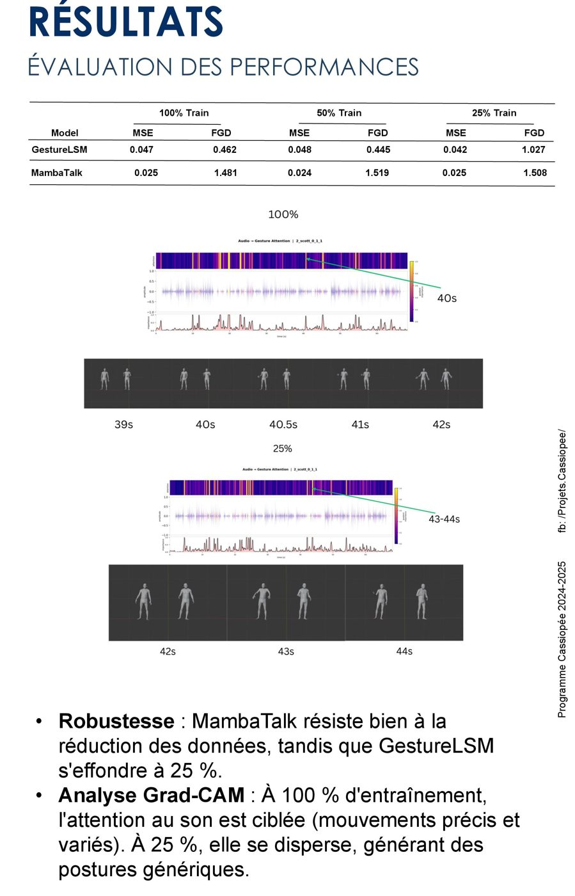

IA · Explicabilité
Cassiopée Les gestes 3D générés écoutent-ils vraiment l'audio ? Explicabilité de modèles de génération de gestes
- Période
- janv. – mai 2026
- Équipe
- binôme avec Mark Kriov
- Outils
- Python, PyTorch, Blender
Comparaison de deux générateurs de gestes 3D à partir de la parole, GestureLSM (flow matching) et MambaTalk (modèle d'espace d'états sélectif), sur le jeu de données BEAT2, avec 100, 50 et 25 % des données d'entraînement. Les métriques usuelles (MSE, FGD) ne disent pas si un modèle exploite réellement le son : nous avons donc construit un pipeline d'explicabilité Grad-CAM temporel pour le vérifier.
Résultat : à 25 % des données, MambaTalk se découple de l'audio alors que ses métriques restent stables (MSE autour de 0,025 et FGD autour de 1,5 à tous les niveaux). GestureLSM, lui, voit son FGD passer de 0,462 à 1,027.
Ma contribution (côté MambaTalk)
- Script de réduction des données d'entraînement à 50 % et 25 %, qui garde exactement les mêmes jeux de validation et de test
- Entraînements et évaluations à 100, 50 et 25 % des données, courbes de perte
- Analyse Grad-CAM des encodeurs audio du visage et du corps de MambaTalk : cartes de chaleur qui alignent forme d'onde, spectrogramme, mots et amplitude du gradient
- Code de réarrangement du jeu de données et génération de TextGrid pour la démo
Réalisé par Mark Kriov (côté GestureLSM)
- Entraînements de GestureLSM, ajout des fonctions d'interprétabilité dans l'entraînement et la visualisation, démo avec audio personnel
Limites
- Pas de scores quantitatifs de fidélité de l'explication, faute de temps : l'analyse Grad-CAM reste qualitative
- MambaTalk a été entraîné sur trois locuteurs, GestureLSM sur un seul, ce qui nuance la comparaison
